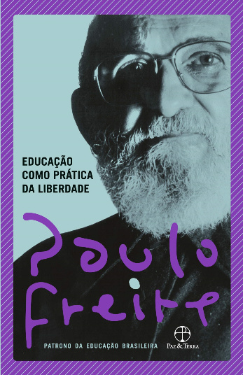

Data
de publicação: 1967
“Educação como Prática da Liberdade”: é um livro que apresenta a proposta de uma educação libertadora, que busca superar a dominação e a opressão através da conscientização. Propõe uma pedagogia que valorize a cultura popular e a participação ativa dos educandos no processo educativo. É percursor da pedagogia crítica, que busca a transformação social através da educação.
Paulo Freire propõe uma pedagogia que valorize a cultura popular e a participação ativa dos educandos no processo educativo. Ele destaca a importância do diálogo, da escuta atenta e da problematização das contradições sociais. Para Freire, a educação como prática da liberdade busca promover a reflexão crítica sobre a realidade e a ação transformadora.
Ao longo do livro, Freire apresenta ideias como a importância da leitura de mundo, a relação entre educação e política, a necessidade de uma educação que promova a liberdade e a autonomia dos sujeitos e a construção coletiva do conhecimento. Ele também destaca a importância da valorização da cultura popular e da participação ativa dos educandos na construção do processo educativo.